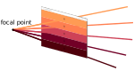

Projection matrices#
Resulting code: step055
Resulting code: step055-vanilla
Now that we are familiar with the concept of matrices, we see how they are used to represent projections, although a perspective projection is neither a linear nor an affine transform so it is not exactly what matrices are supposed to represent, mathematically speaking.
We also present in a second part the typical way of managing transform and projection matrices from the C++ code.
Orthographic projection#
What have we been doing so far regarding the projection of the 3D scene onto our 2D screen? The \(x\) and \(y\) coordinates of the output position out.position is mapped to the window coordinates, and the \(z\) coordinate does not affect the pixel position of our geometry, so this is an orthographic projection along the Z axis:
out.position = vec4<f32>(position.x, position.y * ratio, position.z * 0.5 + 0.5, 1.0);
Remember that we had to remap the \(z\) coordinate to the range \((0,1)\), because anything outside this range is clipped out, the same way anything outside the range \((-1,1)\) along the \(x\) and \(y\) axes falls outside the window.
The normalized clipping volume.
We call this the clipping volume. Only the geometry that lies inside this volume after the vertex shader can produce visible fragments.
Caution
The expected range for the output \(z\) coordinate differs with the graphics API. All modern APIs (DirectX 12, Metal, Vulkan, WebGPU) use \((0,1)\) but OpenGL and WebGL expect \((-1,1)\). The projection matrices have thus slightly different definitions.
Of course this orthographic projection can be easily represented as a matrix:
let P = transpose(mat4x4<f32>(
1.0, 0.0, 0.0, 0.0,
0.0, ratio, 0.0, 0.0,
0.0, 0.0, 0.5, 0.5,
0.0, 0.0, 0.0, 1.0,
));
let homogeneous_position = vec4<f32>(position, 1.0);
out.position = P * homogeneous_position;
Note that the coefficients \(0.5\) in the matrix above come from the fact that we want to remap Z coordinate from the range \((-1,1)\). In general, if the \(z\) coordinates of our model are in range \((n,f)\), we get \(z_{\text{out}} = \frac{z - n}{f - n} = \frac{z}{f - n} - \frac{n}{f - n}\) and so the coefficients become \(p_{zz} = \frac{1}{f - n}\) and \(p_{zw} = \frac{- n}{f - n}\).
We can also change the range of view by dividing the XY size of the scene to fit a larger part of it in the view frustum.
// A more generic expression of an orthographic projection matrix
let near = -1.0;
let far = 1.0;
let scale = 1.0;
let P = transpose(mat4x4<f32>(
1.0 / scale, 0.0, 0.0, 0.0,
0.0, ratio / scale, 0.0, 0.0,
0.0, 0.0, 1.0 / (far - near), -near / (far - near),
0.0, 0.0, 0.0, 1.0,
));
Perspective projection#
Focal point#
A perspective projection is (more or less) the projection that occurs in a camera or a human eye. Instead of projecting the scene onto a plane, it projects onto a single point, called the focal point.
The pixels of the screen correspond to different incoming directions from which elements of geometry are projected.
If we want to map the perspective view frustum to the normalized clip space described above, we need to divide the XY position by the \(z\) coordinate:
The points \(A\) and \(C\) project along the same direction, so they should have the same \(y_\text{out}\) coordinate. At the same time, the points \(A\) and \(B\) have the same input \(y\) coordinate.
The thing is that they have different depths, and as we know objects that are further away look smaller. This is modeled by a division by the depth:
Since \(A\) and \(B\) have different \(z\), they end up at different \(y_\text{out}\) coordinates, which means we see them in slightly different directions (i.e., different pixels in the final image).
We can try this out:
// [...] apply model and view transform, but not the orthographic projection
// We move the view point so that all Z coordinates are > 0
// (this did not make a difference with the orthographic projection
// but does now.)
let focalPoint = vec3<f32>(0.0, 0.0, -2.0);
position = position - focalPoint;
// We divide by the Z coord
position.x /= position.z;
position.y /= position.z;
// Apply the orthographic matrix for remapping Z and handling the ratio
// near and far must be positive
let near = 0.0;
let far = 100.0;
let P = /* ... */;
out.position = P * vec4<f32>(position, 1.0);
Our first perspective.
Ta-dam, it works!
Focal length#
Dividing by the raw \(z\) coordinate was a bit arbitrary, and the formula above is a bit suspicious because its terms are not commensurable: \(y_\text{out}\) is a length (e.g., in meters or feet), but \(y / z\) is a ratio (unit-less). We can in fact scale the division factor:
position.x /= 0.5 * position.z;
position.y /= 0.5 * position.z;
This corresponds to introducing the focal length \(l\) in the formula:
Note
The focal length can be seen as the distance between the focal point and a virtual sensor corresponding to the output window (can be verified using Thales’s theorem).
let focalLength = 2.0;
position.x /= position.z / focalLength;
position.y /= position.z / focalLength;
The focal length is an arbitrary parameter that corresponds to the level of zoom of our virtual camera.

This lens ranges from focal length 18mm to 55mm, depending on how the zoom ring is turned.#
Note
The projection depends only on the ratio between the sensor size and the actual focal length (it is easy to see that if we multiply by 2 the size of the sensor and move it twice as far from the focal point, we get the same image).
As a consequence, commercial focal lengths are generally expressed for a given standard sensor size, namely 35 mm along its diagonal (a size called “full frame”).
Since our clip space has a width of 2 units (from -1 to 1), if we want the visual look of a commercial 50 mm lens, we need to set our focalLength to 2 * 50 / 35 = 2.86. And actually with the 640/480 ratio the diagonal of our clip space is 2.5 so the focalLength ends up being 3.57.
Perspective matrix#
Unfortunately, a perspective projection is not a linear transform, because of the division by \(z\). However, since this division is that commonly used, it is embedded in the fixed pipeline!
How didn’t we notice it yet? Because for more flexibility it does not divide by out.position.z but rather by out.position.w.
We want \(w\) to be position.z / focalLength, so in the projection matrix P we set the coefficient \(p_{wz}\) to 1.0 / focalLength, and set the last diagonal coefficient \(p_{ww}\) to \(0\) instead of \(1\).
let focalLength = 2.0;
// We no longer divide here!
//position.x /= position.z / focalLength;
//position.y /= position.z / focalLength;
let P = /* ... */;
let homogeneous_position = vec4<f32>(position, 1.0);
out.position = P * homogeneous_position;
// We change w instead:
out.position.w = position.z / focalLength;
Important
The \(z\) coordinate itself is also divided by \(w\).
The projection is the same, but since the \(z\) coordinate is also divided by \(w\), the depth information is messed up.#
Before addressing this, we can notice that thanks to the hard-coded division, our perspective projection can be fully encoded as a matrix!
let focalLength = 2.0;
let near = 0.0;
let far = 100.0;
// (no need for a scale parameter now that we have focalLength)
let P = transpose(mat4x4<f32>(
1.0, 0.0, 0.0, 0.0,
0.0, ratio, 0.0, 0.0,
0.0, 0.0, p_zz, p_zw,
0.0, 0.0, 1.0 / focalLength, 0.0,
));
let homogeneous_position = vec4<f32>(position, 1.0);
out.position = P * homogeneous_position;
The coefficients p_zz and p_zw used to be respectively 1.0 / (far - near) and -near / (far - near) so that \(z_\text{out}\) is in range \((0,1)\). Now we need it to be in range \((0, w_\text{out}) = (0, \frac{z_\text{in}}{l})\) so that after the normalization by \(w_\text{out}\) it ends up in \((0,1)\):
Attention
(TODO: explain) This does not work if \(n\) is not null. We must thus set near to a small but non-zero value.
let focalLength = 2.0;
let near = 0.01;
let far = 100.0;
let divides = 1.0 / (focalLength * (far - near));
let P = transpose(mat4x4<f32>(
1.0, 0.0, 0.0, 0.0,
0.0, ratio, 0.0, 0.0,
0.0, 0.0, far * divides, -far * near * divides,
0.0, 0.0, 1.0 / focalLength, 0.0,
));
let homogeneous_position = vec4<f32>(position, 1.0);
out.position = P * homogeneous_position;

We are back to what we had with a manual division, only this time it’s all matrices!#
Our matrix P as defined in the last code block is a perspective projection matrix.
The projection matrix is in general globally multiplied by focalLength compared to our last formula:
let P = transpose(mat4x4<f32>(
focalLength, 0.0, 0.0, 0.0,
0.0, focalLength * ratio, 0.0, 0.0,
0.0, 0.0, far / (far - near), -far * near / (far - near),
0.0, 0.0, 1.0, 0.0,
));
This does not affect the end result because it also scales the \(w\) coordinate. Similarly, multiplying out.position by any value does not change the end pixel of the vertex.
Note
The value out.position / out.position.w that is computed by the fixed pipeline is called the Normalized Device Coordinate. It is this NDC that must fall within the normalized clipping volume described above.
See also
Mathematically, considering that two vectors are equivalent when they are a multiple of each others (like we do here with out.position) defines a projective space, namely a space of directions. Its elements are represented by homogeneous coordinates, called so to remind one that they are not unique, so they do not form a regular (Euclidean) coordinate system.
Matrix Uniforms#
Coordinate systems#
Instead of building the same matrices for each vertex of each object of the scene, we build them once and store them in a uniform buffer.
We can thus extend our uniform structure:
// C++ side
struct MyUniforms {
std::array<float, 16> projectionMatrix;
std::array<float, 16> viewMatrix;
std::array<float, 16> modelMatrix;
std::array<float, 4> color;
float time;
float _pad[3];
};
// WGSL side
struct MyUniforms {
projectionMatrix: mat4x4<f32>,
viewMatrix: mat4x4<f32>,
modelMatrix: mat4x4<f32>,
color: vec4<f32>,
time: f32,
};
Caution
Remember the alignment rules: put the matrices first as they are larger structures.
This is the occasion to more formally introduce the typical way of splitting the transform. We could just store one single matrix \(M\) that would encode the whole transform from the input position to the output clip position, but instead we separate it into a product of a model matrix, then a view matrix, and then the projection matrix:
// Remember that this reads backwards
mat4x4 M = projectionMatrix * viewMatrix * modelMatrix;
Changing the projection matrix corresponds to changing the virtual camera that captures the scene. It happens rarely (unless we create zoom in/out effects).
Changing the view matrix corresponds to moving and turning the camera. It happens almost all the time, whenever the user interacts with your tool/game usually.
Changing the model matrix corresponds to moving the object with respect to the global scene, which is often called the world.
As a consequence, we give a name to the intermediate coordinate systems through which the position passes while being transformed:
in.positionis the local coordinates, or model coordinates of the object. It describes the geometry as if the object was alone and centered around the origin.modelMatrix * in.positiongives the world coordinates of the points, telling where it is relatively to a global static frame.viewMatrix * modelMatrix * in.positiongives the camera coordinates, or view coordinates. This is the coordinates of the point as seen from the camera. You can think of it as if instead of moving the eye, we actually move and rotate the whole scene in the opposite direction.And finally multiplying by
projectionMatrixapplies the projection, either orthographic or perspective, to give us clip coordinates.Afterwards, the fixed pipeline divides the clip coordinates by its \(w\), which gives the NDC (normalized device coordinates).
Note
In order to alleviate notations I omitted above the fact that we actually use the homogeneous coordinates vec3<f32>(in.position, 1.0) as the input of the transform.
Precomputing#
For now the content of the matrices is precomputed on the CPU and then uploaded, but this could also be done in a compute shader, as we will see in the compute part of this documentation.
Make sure to lift the device limit on the uniform buffer size, and define a value for the matrices:
requiredLimits.limits.maxUniformBufferBindingSize = 16 * 4 * sizeof(float);
// Upload the initial value of the uniforms
MyUniforms uniforms;
uniforms.projectionMatrix = /* ... */;
uniforms.viewMatrix = /* ... */;
uniforms.modelMatrix = /* ... */;
// [...]
Warning
Remember that we added a transpose operation all the time. Make sure to flip the coefficient along the matrices compared to our definitions above.
😒 Ahem this is a bit annoying, couldn’t we rather define this
transposeoperation? What about the matrix multiplication?
Yes we could, or we could even reuse what has already been done! Which leads us to the GLM library.
GLM#
The GLM library reproduces the matrix/vector types and operations that are available in shaders, so that we can easily port code between C++ and shaders.
It was originally designed to be as close as possible to the GLSL syntax, which is close in features to WGSL (although type names are slightly different). It is widely used, supported on multiple platforms, battlefield-tested, header-only (so easy to integrate).
Integration#
Here is a stripped down version of GLM: glm.zip (392 KB, as opposed to the 5.5 MB of the official release). Unzip this directly into your source tree. You can include it as follows:
#include <glm/glm.hpp> // all types inspired from GLSL
Note
Make sure to add the main source directory to the include path in your CMakeLists.txt, as some compiler require it to use the <...> brackets in include directives:
target_include_directories(App PRIVATE .)
Basic usage#
Everything GLM defines is contained in the glm namespace. You can either use it globally with a using namespace glm; or import individual types:
using glm::mat4x4;
using glm::vec4;
struct MyUniforms {
mat4x4 projectionMatrix;
mat4x4 viewMatrix;
mat4x4 modelMatrix;
vec4 color;
float time;
float _pad[3];
};
Note
The mat4x4 type of GLM corresponds to WGSL’s mat4x4<f32>. The equivalent of mat4x4<f64> is dmat4x4, with the prefix d for double. It also has an alias called mat4 to correspond to GLSL, which you might like as it is less characters to type. The same goes for vectors (vec3 is vec3<f32>) for integers (ivec2 is WGLS’s vec2<i32>), etc.
It is thus easy to reproduce what we were doing in WGSL. Let’s start with the model transform:
constexpr float PI = 3.14159265358979323846f;
// Scale the object
mat4x4 S = transpose(mat4x4(
0.3, 0.0, 0.0, 0.0,
0.0, 0.3, 0.0, 0.0,
0.0, 0.0, 0.3, 0.0,
0.0, 0.0, 0.0, 1.0
));
// Translate the object
mat4x4 T1 = transpose(mat4x4(
1.0, 0.0, 0.0, 0.5,
0.0, 1.0, 0.0, 0.0,
0.0, 0.0, 1.0, 0.0,
0.0, 0.0, 0.0, 1.0
));
// Rotate the object
float angle1 = (float)glfwGetTime();
float c1 = cos(angle1);
float s1 = sin(angle1);
mat4x4 R1 = transpose(mat4x4(
c1, s1, 0.0, 0.0,
-s1, c1, 0.0, 0.0,
0.0, 0.0, 1.0, 0.0,
0.0, 0.0, 0.0, 1.0
));
uniforms.modelMatrix = R1 * T1 * S;
Then comes the view transform. Do not forget to include the translation of the focal point (which we did not represent as a matrix product above but the conversion is straightforward):
using glm::vec3;
// Translate the view
vec3 focalPoint(0.0, 0.0, -2.0);
mat4x4 T2 = transpose(mat4x4(
1.0, 0.0, 0.0, focalPoint.x,
0.0, 1.0, 0.0, focalPoint.y,
0.0, 0.0, 1.0, focalPoint.z,
0.0, 0.0, 0.0, 1.0
));
// Rotate the view point
float angle2 = 3.0 * PI / 4.0;
float c2 = cos(angle2);
float s2 = sin(angle2);
mat4x4 R2 = transpose(mat4x4(
1.0, 0.0, 0.0, 0.0,
0.0, c2, s2, 0.0,
0.0, -s2, c2, 0.0,
0.0, 0.0, 0.0, 1.0
));
uniforms.viewMatrix = T2 * R2;
And finally the projection:
float ratio = 640.0f / 480.0f;
float focalLength = 2.0;
float near = 0.01f;
float far = 100.0f;
float divider = 1 / (focalLength * (far - near));
uniforms.projectionMatrix = transpose(mat4x4(
1.0, 0.0, 0.0, 0.0,
0.0, ratio, 0.0, 0.0,
0.0, 0.0, far * divider, -far * near * divider,
0.0, 0.0, 1.0 / focalLength, 0.0
));
The vertex shader simply becomes:
fn vs_main(in: VertexInput) -> VertexOutput {
var out: VertexOutput;
out.position = uMyUniforms.projectionMatrix * uMyUniforms.viewMatrix * uMyUniforms.modelMatrix * vec4<f32>(in.position, 1.0);
out.color = in.color;
return out;
}
I am not putting the image again, you should still obtain the same result. Only this time it is much less energy consuming since matrices are computed only once, instead of once per vertex and per frame (which can easily count in millions or more in a practical scenario).
Extensions#
The construction of atomic matrices like translations, rotations, scaling or perspective is something that is very common. Yet it is not part of the built-in functions of WGSL because, as we just saw, we are not supposed to do it in the shader code.
Since GLM intends to reproduce the types of the shader languages, it does not include those neither. At least not in the glm/glm.hpp. But it does in its extensions, which we can include like this:
#include <glm/ext.hpp>
The construction of the model and view matrices becomes as simple as this:
S = glm::scale(mat4x4(1.0), vec3(0.3f));
T1 = glm::translate(mat4x4(1.0), vec3(0.5, 0.0, 0.0));
R1 = glm::rotate(mat4x4(1.0), angle1, vec3(0.0, 0.0, 1.0));
uniforms.modelMatrix = R1 * T1 * S;
R2 = glm::rotate(mat4x4(1.0), -angle2, vec3(1.0, 0.0, 0.0));
T2 = glm::translate(mat4x4(1.0), -focalPoint);
uniforms.viewMatrix = T2 * R2;
Note that transformation functions provided by GLM all take an input matrix to transform, in order to spare us a matrix multiplication. Here we always use the identity matrix mat4x4(1.0) to build atomic transforms, but the model matrix above could have also been built this way:
mat4x4 M(1.0);
M = glm::rotate(M, angle1, vec3(0.0, 0.0, 1.0));
M = glm::translate(M, vec3(0.5, 0.0, 0.0));
M = glm::scale(M, vec3(0.3f));
uniforms.modelMatrix = M;
I personally find it harder to read though, because we must apply the operations in reverse.
Note
The rotate function enables one to turn around any axis (the second argument) instead of being limited to the X, Y and Z axes like we did when manually building rotation matrices.
GLM extensions also provide a procedure for building projection matrices, and in particular a perspective projection:
float near = 0.001f;
float far = 100.0f;
float ratio = 640.0f / 480.0f;
float fov = ???;
uniforms.projectionMatrix = glm::perspective(fov, ratio, near, far);
It has almost the same parameters as we used, except that instead of a focal length, it uses a field of view argument, a.k.a. fov.
Important
There are actually two hidden settings that the perspective function depends on and which we must take care of. Both of these settings are enabled globally by defining preprocessor variables before including GLM:
#define GLM_FORCE_DEPTH_ZERO_TO_ONE
#define GLM_FORCE_LEFT_HANDED
#include <glm/ext.hpp>
The first one is GLM_FORCE_DEPTH_ZERO_TO_ONE, which tells GLM that the clip volume’s Z range is \((0,1)\). By default, it assumes that it is \((-1,1)\) because this is the convention that was used by OpenGL, which is different from WebGPU.
The second one is the GLM_FORCE_LEFT_HANDED to mean that our view space uses a left-handed coordinate system. This is the choice that we have implicitly adopted so far because the clip space is left-handed. Switching to a right-handed system is possible, in which case be aware that the camera looks in the direction -Z of the view space instead of +Z.
Note
You may also define these settings globally in your CMakeLists.txt with target_compile_definition in order to ensure that they are consistent across all of your files.
Back to the field of view: it is directly related to the focal length:
We can see from this figure that \(\tan\frac{\alpha}{2} = \frac{1}{l}\), which gives us the following conversion rules between focal length and field of view:
Most probably you will use either fov or focal length and stick to it so there will be no need for conversion! We can still check that our formula gives again the same result:
float fov = 2 * glm::atan(1 / focalLength);
uniforms.projectionMatrix = glm::perspective(fov, ratio, near, far);
Caution
The field of view expected by glm::perspective must be expressed in radians. If you want to set it to \(45\deg\) (which is a common value), you must set fov = 45 * PI / 180.
Still looking the same… but we make our code base so much more robust!#
😟 Hey it’s no longer turning around for me…
You need to update the model matrix in the main loop!
// Update view matrix
angle1 = uniforms.time;
R1 = glm::rotate(mat4x4(1.0), angle1, vec3(0.0, 0.0, 1.0));
uniforms.modelMatrix = R1 * T1 * S;
queue.writeBuffer(uniformBuffer, offsetof(MyUniforms, modelMatrix), &uniforms.modelMatrix, sizeof(MyUniforms::modelMatrix));
// Update view matrix
angle1 = uniforms.time;
R1 = glm::rotate(mat4x4(1.0), angle1, vec3(0.0, 0.0, 1.0));
uniforms.modelMatrix = R1 * T1 * S;
wgpuQueueWriteBuffer(queue, uniformBuffer, offsetof(MyUniforms, modelMatrix), &uniforms.modelMatrix, sizeof(MyUniforms::modelMatrix));
Conclusion#
In this quite mathematical chapter, we have seen fundamental points:
Projections (either orthographic or perspective) can be encoded as matrices thanks to the coordinate normalization performed by the fixed pipeline (the division by \(w\)).
A perspective projection is parameterized either by a focal length or a field of view.
Transform matrices (mode, view, projection) should be computed once and stored in a uniform buffer to avoid unnecessary costly computation.
The GLM library provides us with all we need to easily compute these matrices on the CPU side.
See also
The GLM library is focused on vector and matrices up to the 4th dimension. For linear algebra of higher dimensions, I usually turn to the Eigen library instead, but we won’t need it here.
Resulting code: step055
Resulting code: step055-vanilla